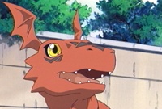
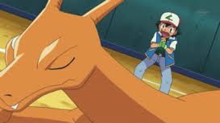

Charizard
 De: La Frikipedia, la enciclopedia extremadamente seria.
De: La Frikipedia, la enciclopedia extremadamente seria.
| De la serie bichos dentro de bolas:
|
| Choripand
|
|
|
| Nombre
|
Choripand
|
| Especie
|
Dragón Hada de Fuego
|
| Apariencia
|
Parece un dragón pero no lo es
|
| Hábitat natural
|
En el aire, en cuevas, starbucks, etc...
|
| Localización
|
En una pokebola
|
| Tipo
|

|
| Habilidad
|
Tirar fuego por la boca
|
| Pokemonización
|
Quizás
|
| Número
|
300
|
«Roar Roar Roar»
~ Charizard "hablándote" para tener relaciones sexuales.
«¡La puta madre!»
~ Ash cabreado por que su Charizard no le hace ni puto caso.
«Wooooooow»
~ n00b al ver a su Charmy Charmeleon evolucionar a Charizard.
 Guilmon al ver que insultan a su tío-abuelo.
 Ninguna novedad, ni puto caso.
Curiosidades de Charizard
- Es uno de los pocos pokémon que no dicen su nombre cuando intentan comunicarse, por lo que es menos hartante y además no quedaría bien uno de estos bichejos diciendo: Charizard, Zard, Chari, etc.
- Se dice que
es un plagio de Metal Greymon es el tío de Agumon y también padrino de Drago, la verdad, tiene parientes en diversas partes del mundo.
- Es el pokémon que en más series se lo ve, En Kanto se lo ve, en Islas Taronjas se lo ve, En
Joto Jhoto se le ve, etc.
- Es capaz de escribir: ௫, ௵, ௺, ௨, etc...
- Este pokémon es infinitamente fuerte, y el estúpido de Ash que según el "quiere ganar muchas batallas", no se lo lleva con el.
- Vibrava se denomina de tipo dragón, en caso de que Charizard no lo sea...
- Su Mega-evolucion, los de GameFreak (frikis de los juegos), lo hacen de tipo dragón al fin (lo llaman Charizard X).
Formas de capturar a Charizard en la DS
Cuando empieces el juego, corre a la casa de tu vecino y entra, cuando entres verás que esta casa tiene una plaga de lagartijas, y abra una lagartija encima de una chica (tu vecina) follando, háblale y te dirá: Muac Muac, ¡Hey! deja de interrumpir, ¡Oh! pero si eres mi vecino, dime ¿Quieres follarte a esta lagartija?, te saldrán dos opciones:
SI o NO, debes darle al SI, pues con esto la chica se correrá y tomarás su lugar, la pantalla se pondrá en negro y escucharas ruidos eróticos extraños y luego volverá a la normalidad, te encontrarás con tu vecina de nuevo y te dirá ¡Oh! Lo has echo bien, ¿Quieres follar denuevo?, si es que deseas tener más placer con la lagartija, ponle a SI, pero si quieres conseguir tu Charizard ponle a NO, resultara que cuando te vayas la lagartija te seguirá por que se a enamorado de ti, bueno ve a tu casa y saca un ají colombiano del freezer y dáselo a la lagartija, empezará una musiquita y la lagartija se prenderá fuego, bien conseguiste un Charmander, agarra a la lagartija y ponla en el horno todo un día y luego ve a ver tus resultados, a la lagartija le abran crecido alas y se habrá vuelto naranja por la cocción, háblale y saldrá del horno, échale jugo de limón en el vientre y mételo en tu pokeball y listo, ya tienes un charizard.
Formas de capturar un Charizard en tu casa
En primer lugar debes ir a una tienda de mascotas y comprar a Barney el dinosaurio una lagartija de tamaño XL, luego compra ají picante y méteselos por el culo, por la boca, (todo orificio que veas), esto hará que su organismo exploté y... ¡Tataaan! Ya tienes un Charmander, agarra al nuevo resultado y préndele con un fósforo la cola y la lengua, después llévatelo a algún SPA y déjalo a 400°C en el sauna, se habrá convertido en un Dragón de Cómodo con la cola ardiente, luego sácale del sauna y enséñale a leer y dale toda la saga de Eragon y un jugo de limón, verás que cuando se lo haya terminado se habrá convertido en un dragón anaranjado con el vientre amarillo, mételo en tu Poké Ball y ya lo tienes. Posible resultado de la primera prueba...
¿Sabías qué...
- ...esta lista empezó?
- ...lo de arriba es verdad?
- ...lo segundo también?
- ...este dragón alado hizo terrorismo en Jotho?
- ...que todos los pokémon tipo dragón o fuego son un plagio de Barney?
- ...en realidad lo que sale por su boca es el efecto del ají picante?
- ...sus pedos suenan como la 4° Sinfonía de Mozart?
- ...lo de arriba es mentira?
- ...es enemigo mortal de Dragonoid?
- ...Dan (Bakugan) quiso copiar a Ash de tener a tu criatura en el hombro?
- ...le agarraron 24 hernias por hacerlo?
- ...lo de arriba no tiene nada que ver con Charizard?
- ...Rayquaza lo elimino de la ADDNTC? (AsociaciónDeDragónesNoTocaCojones?
- ...la alimentación de Charizard es a base de Magikarps variocolores y ají colombiano?
- ...no es tipo dragón pero parece dragón?
- ...Gyarados entiende el por qué?
- ...lo puedes matar (literalmente) a base de rocas? (Brock time!)
- ...Borat tiene muchos Charmeleon en su PC?
- ...los Patrat se acojonan de verle la
polla cara?
- ...los Patrat de muy lejos se descojonan de el?
- ...en sus años mozos trabajaba en el Burger King?
- ...no hay camisetas de Charizard?

|
|
|
Autor(es):
- Fordus
- Gñapero Solitario
- Lakiax
- Alex64646
- Titofer
- Luigi200
- Eduardo.Rap.Rock
- Lara69
- Naza666
Frikipedia 2005-2016, Licencia
GFDL 1.2 - Extraído por FrikiLeaks